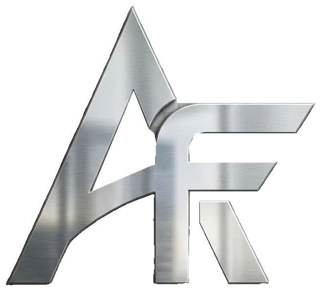

PERFILSou graduado em Análise e Desenvolvimento de Sistemas, com formação técnica em Eletrônica. Minha trajetória passa por suporte corporativo, infraestrutura e segurança defensiva — sempre com o mesmo fio condutor: entender como as coisas funcionam por dentro.
Gosto de investigar o que está por trás dos eventos: organizar logs, reconhecer padrões e automatizar o trabalho repetitivo com Python. Levo para a segurança a disciplina de quem passou anos diagnosticando sistemas e resolvendo incidentes em ambiente real.
Também trago experiências em manutenção e instalações elétricas, que reforçaram minha atenção ao detalhe, à segurança operacional e à resolução prática de problemas.